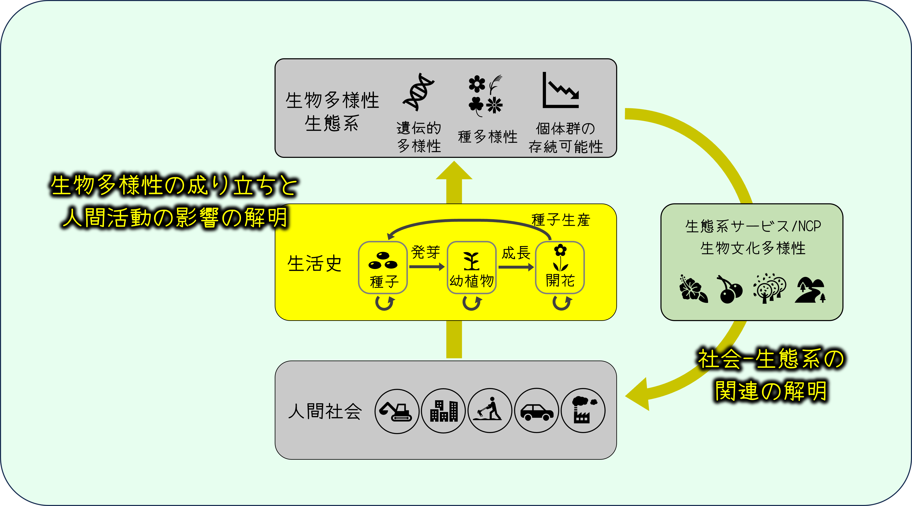

生物は生まれてから成長・繁殖して次世代を残し、やがて死亡します。このように生物個体が一生涯の間に行う一連の生命活動を「生活史」といいます。 植物の生活史は種子・幼植物・開花などの生育段階で構成されますが、その進み方は種によって大きく異なっていて、 一年で生活史を全うする一年生植物もいれば、何十年・何百年と長生きする多年生植物もいます。 また、人為かく乱の影響で成長途中で死亡したり種子生産数が減少したりするなど、同じ種であっても環境条件に応じて生活史の流れには違いが生じます。
生活史を明らかにするには、個体を経時的にモニタリングして、いつ・どの程度繁殖・死亡するのかを観測する「生活史調査」が必要です。 生活史調査は、私たち人間社会にあてはめて考えると、個人・世帯単位でのモニタリング調査である「国勢調査」に相当するアプローチといえます。 国勢調査が人口や年齢構成の将来予測に用いられているように、植物版国勢調査たる生活史調査は、個体群・群集レベルの現象を理解・予測するために必要な情報を提供してくれます。 そこで当研究室は、農地・森林・草地・都市緑地などにおける野生植物の生活史調査を通じて、 同種・他種個体の存在や土地開発・化学物質汚染などの人為かく乱のもとで植物がどのような生活史を持っているのかを明らかにするとともに、 個体数や遺伝的多様性・種多様性の将来予測に挑んでいます。
人間は生物多様性や生態系を脅かす一方で、植栽や鑑賞物、特産品など様々なかたちで植物を利用し、経済的・文化的恩恵を享受しています。 当研究室は、こうした植物の生態系サービス・NCP (Nature's Contibution to People)に着目して、人間社会にとっての生物多様性の価値や社会-生態系の関連の解明にも挑んでいます。 人間社会と生物多様性の相互作用を明らかにすることで、生態系と調和した農林業・緑地空間のあり方を探求しています。